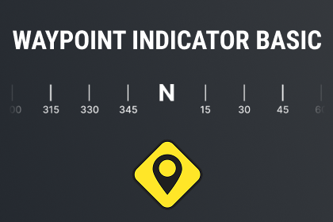

Waypoint Indicator Basic
A flexible and powerful UI indicator system for world-space targets in Unity. Supports off-screen arrows, distance display, and multiple styles. Perfect for waypoint systems, enemies, and objectives.
View Details